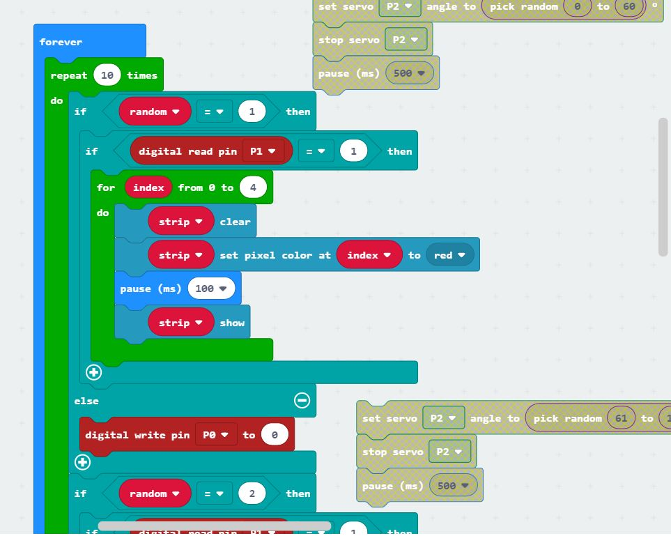
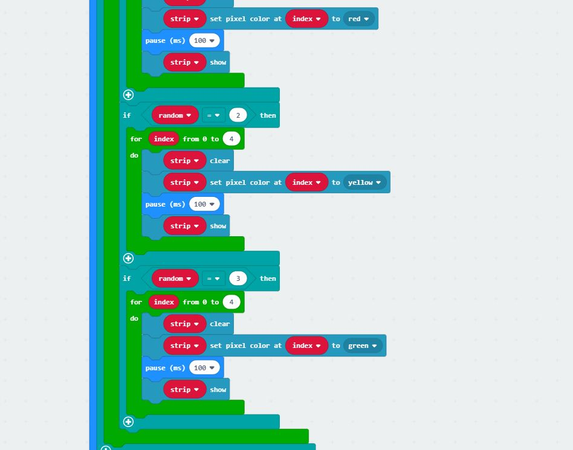
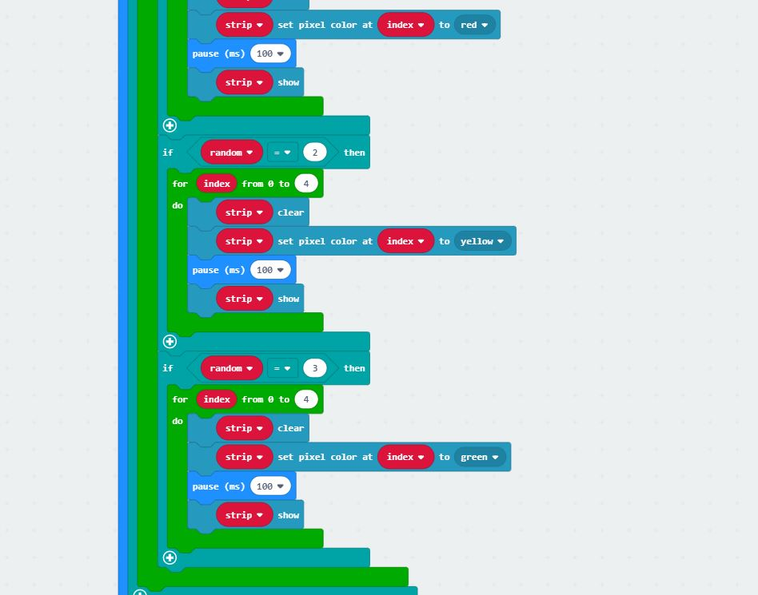

We decided to use a tilt sensor instead of the light sensor on the micro:bit board as it is smaller
and then we took longer than expected to figure out the code, ensuring that the lights stop instantly when the switch is disconnected

We also found out that the servo we had was not spoilt, we just needed to use an external power source...we have 2 servos now.
p5.js
The data from micro:bit is not stable, p5.js often could not read serial.
After a lot of strugle, how to play videos in order was resolved.
Thanks to Yuta's help, by adding different "state"s, videos are able to change!
But videos were still unable to switch smoothly as the video will not loop.
It also kept saying "element play method raised an error asynchronously".
We tried the "while" function which kept crashing the entire page due to the loop.
We even tried to create separate functions for each video but the same error kept appearing.
Seemed like the problem lies somewhere in those 3 videos' codes.
After more help from Yuta, we the loop works now! We previously put it under the draw() function, which runs all the time. Moving it to another function ensured that it only ran when called upon.

 
